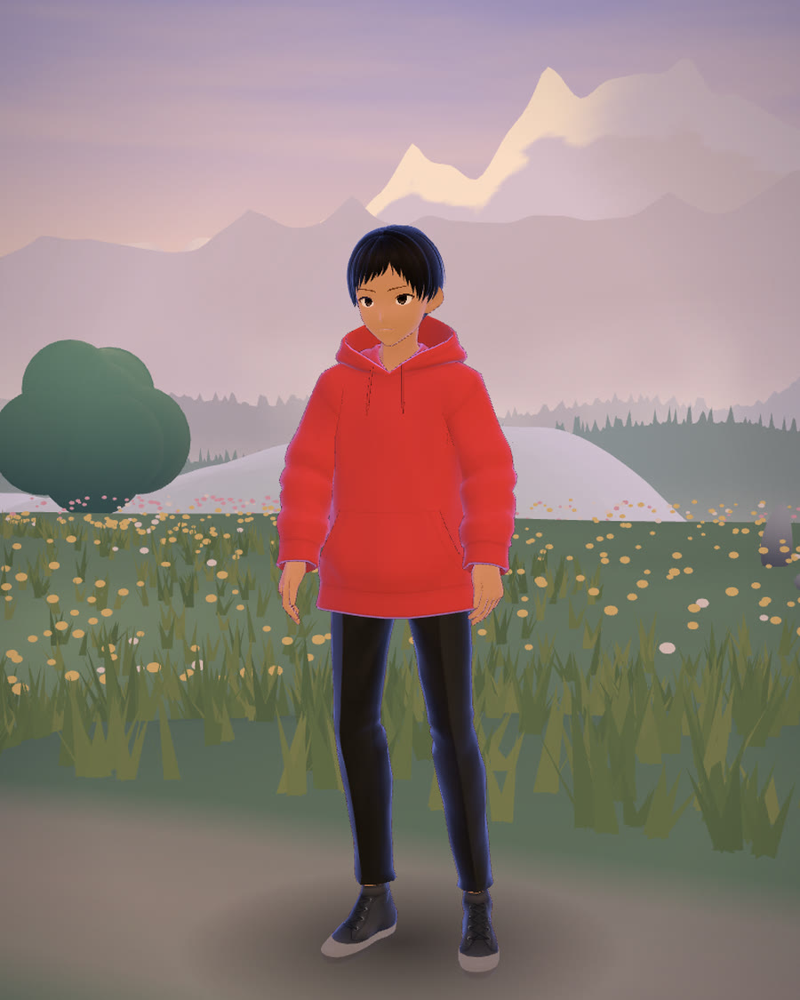
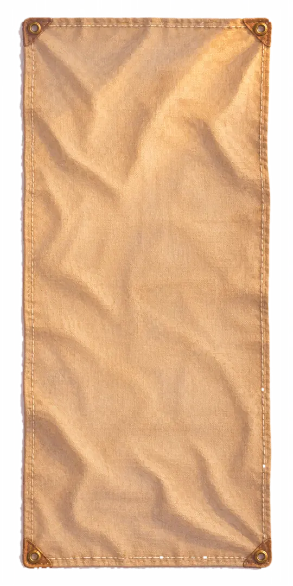

The camera
Cinematic websites
Scroll films and motion that make a brand feel big. As visitors scroll, the story moves: layers glide past each other at their own pace, like this little scene does as you scroll the page.
2,850 m Base camp
4,410 m What I can build
Five things I build. Each card has a small live demo: try them.
The camera
Scroll films and motion that make a brand feel big. As visitors scroll, the story moves: layers glide past each other at their own pace, like this little scene does as you scroll the page.
The lantern
3D product views, sliders and effects visitors can play with. People remember what they touched: turn this lantern round with your mouse or finger.
The compass
Layouts that guide visitors to book, buy or call. One clear message, one clear next step. Drag the line to compare a plain page with a guided one.
What would you like?
Pick a time
Ready to book
Booked. A confirmation is on its way on WhatsApp. (Just a demo: nothing was sent.)
The rope
Ordering, enquiry and WhatsApp flows that hold together. Three calm steps, no dead ends. Try booking something.
The map and the watch
SEO and speed, so customers find you and stay. Clean structure search engines understand, and pages that load before anyone thinks of leaving. (The rings show example scores, the kind a well-built page aims for.)
Tools HTML · CSS · JavaScript · Three.js · GSAP · Lenis · VRoid · Mixamo
3,980 m Work
Three projects, labelled honestly: two concepts and one pitch demo.Three projects, each pitched at its own camp along the ridge: two concepts and one pitch demo. Tap one to open it.
DERMAÉDerma clinicConcept
A soft colour palette and a smooth scroll film that feels like a luxury advert.
View case studyView project: DERMAÉThe King's GardenPlant nurseryPitch demo
A cinematic film of the nursery's work and 360° plants you can explore.
View case studyView project: The King's GardenTrinetraSignage & brandingConcept
A scroll film that walks through a real client job, step by step.
View case studyView project: Trinetra3,600 m How I work
01
I learn your business, your customers, and what makes you different.
02
I plan how your visitors should feel and what they should do, including the interactions you want.
03
I bring it to life, sharing progress so you can give feedback along the way.
04
We go live, test on real devices, and polish.
I work with businesses worldwide, communicate clearly across time zones, and share progress along the way.
3,180 m About

I fell in love with code because of what it can show. A few lines can become a view that stops you, like reaching the top of a trail and seeing the whole valley open up below.
That's how I see websites too. The climb is the hard part: understanding a business, its people, and what makes it different. The view at the top is what its customers get to feel.
I work with businesses worldwide, from India to anywhere.
When I'm not building, I'm on a trail, in the gym, on a football pitch, or lost in a book.
2,850 m Contact
Tell me a little about your business and what you'd like your website to do.
The climb is the hard part: understanding a business, its people, and what makes it different.
The view at the top is what its customers get to feel.
The meadow
First light.
3,860 m Gear check
The kit laid out before the last climb. Tap an item to see what it stands for.
